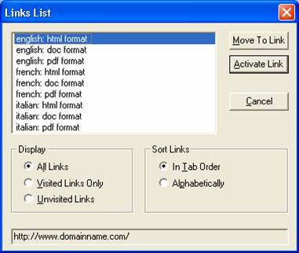

|  |
- Il testo del tipo: "english - html format" permette
di raggruppare i link a documenti scritti nella stessa
lingua
- Utilizzando l' attributo <title> o
<alt> non viene modificato il testo che appare
sullo schermo, ma solo quello che appare nella status bar e che
viene evidenziato al passaggio del mouse
|